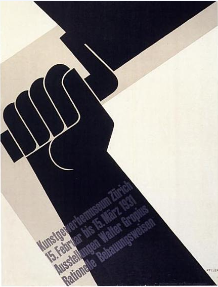

Swiss style, also known as the International Typographic Style, is a direction which appeared in the 1920s with later getting bright expression in graphic design in - as indicated by the name - Switzerland (ca. 1940-50s). This style slowly rose to become the solid foundation of graphic design in the mid 20th century, all across the globe.
Representatives of flat designOne of the artists of this creative movement was Josef Muller-Brockmann, the representative of the Zurich School of Arts and Krafts. The style emerged from a desire to represent information objectively and in a universally straightforward manner, free from the influence of associated meaning.
A graphic design method based on grid-work that began in the 19th century became an inspiration for modifying the foundational course at the Basel School of Design in 1908. Following a mere decade, in 1918, Ernst Keller began developing a graphic design and typography course. He did not teach a specific style to his students, rather he taught an ideology of style that dictated the solution to the design problem should emerge from its content. Kellers work uses simple geometric forms, vibrant colors and evocative imagery to further elucidate the meaning behind each design.
magery to further elucidate the meaning behind each design.
Akzidenz-Grotesk is a sans-serif typeface family originally released by the Berthold Type Foundry of Berlin. Akzidenz indicates its intended use as a typeface for commercial, or "occasional" or "jobbing", print runs such as publicity, tickets and forms, as opposed to fine printing.

In this poster, Ernst Keller, a Swiss designer, uses the diagonal to attract the eye and to suggest dynamic activity. The printing of the image is by letterpress from linocut blocks overprinted from type in opaque grey. The fingers gripping the handle of the trowel turn the hand into a fist, a universal symbol in political propaganda to suggest the acclamation and solidarity of a crowd.